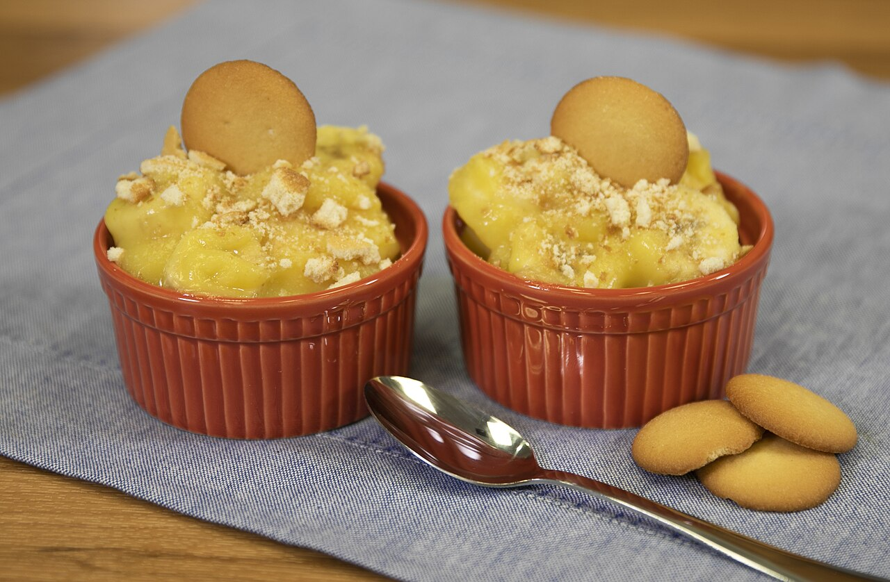

a dishbanana pudding
Ordered by the small or large cup at the counter; at Allen & Son it was the Friday dessert.

Layers of sweet vanilla custard, vanilla wafers and sliced bananas built up in a dish and topped with meringue or whipped cream, then chilled until the wafers soften and the layers run together. It is the barbecue house's dessert in both Carolinas, whole-hog pits and shoulder pits alike: the Barbecue Center in Lexington sells it by the small or large cup, Sam Jones BBQ lists it beside the whole hog, Sweatman's in Holly Hill serves it after hash and rice, and Rodney Scott's in Charleston listed it with the catfish and ribs. It needs no oven, scales up to a crowd and keeps — one theory of how a dessert with no early Southern tie became Southern.
The story Cited · wp-banana-pudding
The pudding is older than its Southern accent. Recipes for banana pudding were popular across the United States in the 1890s, most of them built on sponge cake; the vanilla wafer first replaces the ladyfinger in 1920, in a recipe from Mrs. Laura Kerley in the Bloomington, Illinois Pantagraph, and in the 1940s the National Biscuit Company began printing a banana pudding recipe on the Nilla Wafers box, and the box did the rest. Wikipedia finds no consensus on how it became Southern; one theory is the church picnic, the family reunion and the barbecue, where a dessert that needs no cooking, scales to a crowd and keeps has the advantage. Inference — the barbecue house is that gathering made permanent, and the pudding came in on the same logic: a pit kitchen has no pastry oven, but it has a cooler. At Buxton Hall in Asheville, which cooked whole hog until it closed in November 2023, the pudding went out under meringue and Our State said its regulars would swear by that; at Allen & Son outside Chapel Hill, where Keith Allen baked the pies and rolled the cobbler crusts himself, banana pudding was the Friday dessert. Clyde Cooper's in Raleigh, which opened in 1938 without it, added it later and calls it a good old Southern thing. Centerville, Tennessee holds a National Banana Pudding Festival on the first weekend of October.
How it is done Cited · wp-banana-pudding
A vanilla custard is cooked and cooled. In a deep dish the cook lays wafers, then banana slices, then custard, and repeats to the top; the dish is chilled for hours so the wafers absorb the custard and the layers merge, which is the point. The top is meringue browned in the oven, or whipped cream. Counters sell it by the cup — 10 or 16 ounces at the Barbecue Center — and it comes after the tray, not with it.
Today Cited · web-barbecue-center-menu
The Barbecue Center, Lexington: homemade banana pudding, small (10 oz) $4.00, large (16 oz) $6.25 on its online menu (September 2026). Sam Jones BBQ lists it in Winterville and Raleigh; Sweatman's keeps it with hash and rice; Clyde Cooper's keeps it in Raleigh. Lexington Barbecue's dessert list is pies and cobbler, with no pudding.
Facts
| course | sweet |
|---|---|
| styles | Eastern North Carolina barbecue, Lexington-style barbecue, South Carolina mustard barbecue, Pee Dee whole-hog barbecue |
| region | The Carolinas, North Carolina, South Carolina, The American South |
| links | Banana pudding — Wikipedia |
| confidence | high · updated 2026-09-15 |
Recipes you may use
Public-domain cookbooks are printed here in full, spelling and all. Where a recipe is still in copyright, the page gives the ingredients — a list of what goes in is a fact — and links to the rest.
Banana Pudding
- 1 cup (240 ml) milk
- 1 cup + 2 Tablespoons (200 g + 25 g) granulated sugar
- 2 teaspoons (10 g) butter
- ¼ teaspoon salt
- 1 teaspoon vanilla extract or vanilla sugar
- 4 eggs, separated
- 2 Tablespoons (15 g) cornstarch
- 14–20 vanilla wafers or ladyfingers
- ¼ cup (60 ml) lemon juice
- 2 ripe bananas
- 1 Tablespoon (10 g) shredded unsweetened coconut
Makes 4 servings.
Custard cooked from scratch, wafers, bananas and a meringue — the built-from-scratch form, before the box-pudding-and-whipped-topping version most pits serve now.
Banana Custard
- the yolks of two eggs
- One-half cup of sweet milk
- One-half cup of sugar
- One teaspoonful of butter
- Two tablespoonsful of flour
A pie, not a layered pudding, and there are no wafers in it: the vanilla wafer only reaches the dish after the National Biscuit Company began printing a banana recipe on the Nilla box. The custard, the bananas and the meringue are already here in 1922.
Banana Custard Pie
Four words long in the book, because it is written as a variation. The receipt it points back to is quoted in brackets so it can be cooked; the brackets are this site's, everything inside them is the book's. An early printed pairing of banana with a meringue-topped custard.
Not to be confused with
- pig pickin' cake — The cake is sliced; the pudding is spooned. Mandarin orange and pineapple in a frosted layer cake, against bananas and wafers in custard.
Its kin
Who points back
Sources
- Banana pudding — Wikipedia · link
- Barbecue Center — online menu (prices as posted) · link
- Menu · link
- Our Story — Clyde Cooper's BBQ, Est. 1938 · link
- Allen & Son in Chapel Hill — Our State (Jason Zengerle, 6 Aug 2017) · link
- Buxton Hall Barbecue Brings Whole-Hog Tradition and Hash to Asheville — Our State · link
- Rodney Scott's Whole Hog BBQ — Wikipedia · link
- Sweatman's Bar-B-Que Restaurant near Holly Hill, SC · link
- Lexington Barbecue — Menu · link
- Cookbook:Banana Pudding — Wikibooks Cookbook · link
- Aunt Caroline's Dixieland Recipes: A Rare Collection of Choice Southern Dishes — Emma and William McKinney, 1922 · link
- Mrs. Porter's New Southern Cookery Book, and Companion for Frugal and Economical Housekeepers — Mrs. M. E. Porter, Prince George Court-House, Virginia, 1871 · link
Where it came from: Cited a source we name · Harvested pulled from an open dataset · Tradition what the tradition says, hedged · Inference this project's reasoning · Field somebody stood there. This record as JSON.